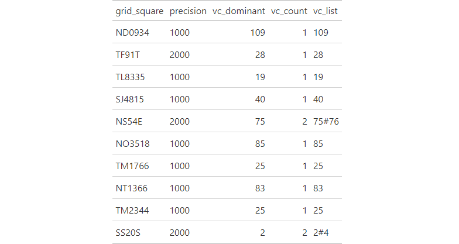

A list of OSGB 10km, 2km and 1km grid squares with the dominant vice county that overlaps the grid square and list of all vice counties overlapping the grid square at the vice county borders.
vc_grid_square_intersects
A tibble with 363518 rows and 5 variables.
OSGB 10km, 2km or 1km grid square.
Precision of grid square in metres.
Dominant vice county number occupying the largest grid square area.
Number of vice counties overlapping the grid square.
Hash separated list of vice counties numbers overlapping the grid square.
Sample of 10 rows from vc_grid_square_intersects dataset.

The list of British vice-counties can be downloaded from the Biological Records Centre website, with the vice-county boundaries downloaded from Biological Records Centre's github page.
suppressPackageStartupMessages({ library(store) suppressWarnings({ library(dplyr) library(gt) library(here) library(fs) library(pagedown) }) }) # create figures directory dir_create(path(tempdir(), "figures")) # create html table vc_grid_square_intersects %>% slice_sample(n = 10) %>% gt_preview(top_n = 10, incl_rownums = FALSE) %>% gtsave(path(tempdir(), "figures", "vc_grid_square_intersects.html")) # convert to image chrome_print(path(tempdir(), "figures", "vc_grid_square_intersects.html"), format = "png") # move image if(dir_exists(here("man", "figures"))) { file_move(path(tempdir(), "figures", "vc_grid_square_intersects.png"), here("man", "figures", "vc_grid_square_intersects.png")) }